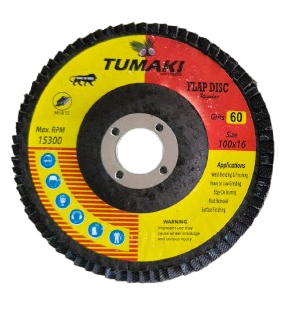
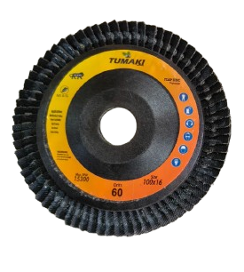

Tumaki Regular Flapdisc 4"

- Power: Fast stock removal with premium abrasive grains
- Durability: Designed for cost‑effective grinding and finishing
- Applications: Weld grinding, beveling, edge deburring, rust removal, blending, surface prep
- Available Grits : 60 / 80 / 120
- Available Sizes : 4" (100MM)
Tumaki Flexible Flapdisc 4"

- Cutting Power: Fast stock removal with premium abrasive grains
- Durability: Offers superior durability under heavy‑duty grinding, beveling, and stainless steel finishing.
- Applications: Weld grinding, beveling, edge deburring, rust removal, blending, surface prep
- Available Grits : 60 / 80 / 120
- Available Sizes : 4" (100MM)
Tumaki 4" Cutoff Wheel
- High cutting speed with minimal burr formation
- Long service life due to reinforced structure and premium bonding
- Cost‑efficient performance without compromising durability